개요 및 엔터프라이즈 에이전트 아키텍처
분산된 사내 포털(인사관리 WorkWeek, IT서비스 ServiceImmediately)과 Cloud Storage에 저장된 복무/IT 규정 PDF 문서를 연계하여, 규정을 먼저 검증한 뒤 시스템 작업을 대행하는 AI 에이전트를 구축합니다.
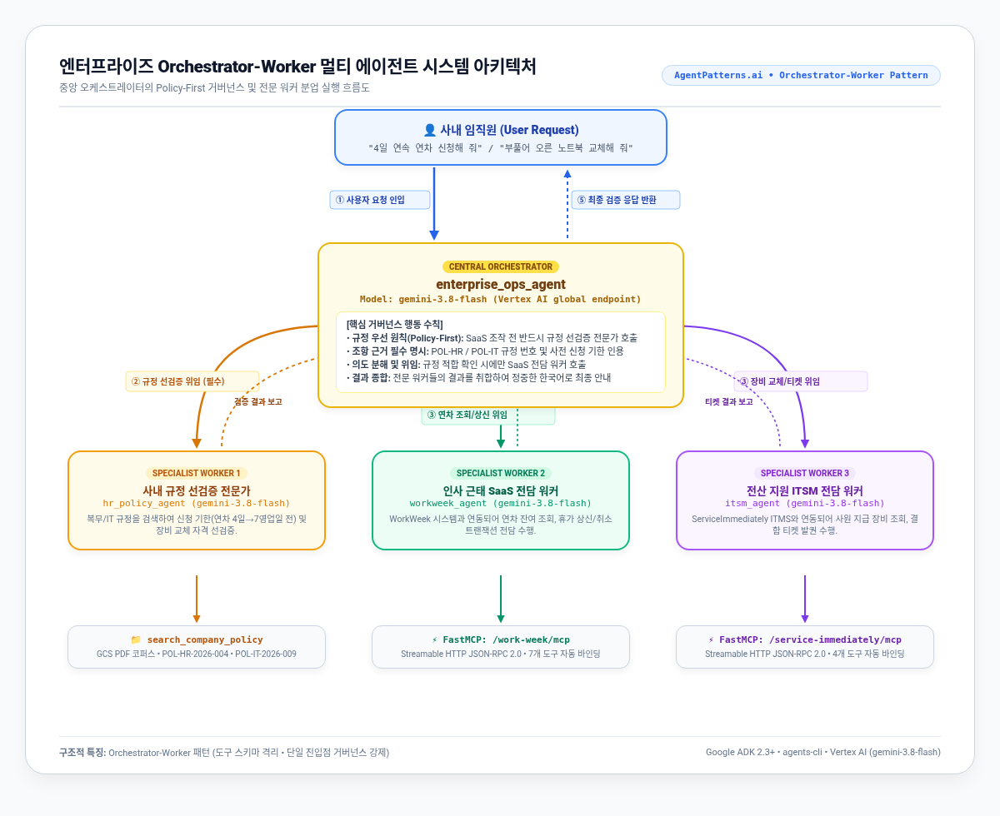
참여자들은 Antigravity 개발 환경에서 ADK(Agent Development Kit)를 기반으로 에이전트 핵심 로직을 단계별 코드로 구현하고, 사내 Gemini Enterprise에 등록 가능한 A2A 인터페이스 및 배포 규격을 완성합니다.
- Google Antigravity 2.0 (agy) 프롬프트 주도 개발
- Google ADK 2.0 멀티 툴 에이전트 & Cloud Storage RAG 도구
- FastMCP 프로토콜 기반 Korean Mock SaaS 연동
- Gemini Enterprise 배포용 A2A 인터페이스 규격 패키징
단순 프로토타이핑을 넘어 엔터프라이즈 레벨의 안정성을 확보하기 위한 Evaluation(품질 평가) 및 Governance(거버넌스) 기준을 점검하고, Agent Platform 배포 및 Gemini Enterprise 연동까지 에이전트 개발의 라이프사이클 전 과정을 완벽하게 마스터할 수 있습니다.
- Golden Evalset 기반 에이전트 정량적 품질 평가
- 엔터프라이즈 거버넌스 가드레일 및 보안 규칙 검증
- Agent Platform 프로덕션 배포 및 모니터링 체계 점검
Qwiklabs 실습 시작 및 Google Cloud 콘솔 로그인
임시 계정을 발급받아 Chrome 시크릿 창에서 Google Cloud 콘솔에 안전하게 접속하는 공식 절차입니다.
• Start Lab을 누르면 타이머가 즉시 작동하며 일시 정지할 수 없습니다.
• 반드시 Chrome 시크릿 창(Incognito Window)을 사용해야 개인 구글 계정과 섞이지 않고 불필요한 과금을 방지할 수 있습니다.
• 개인 프로젝트가 아닌, 왼쪽 패널에 표시된 임시 자격증명(Username/Password/Project ID)만 사용하세요.
실습 화면 좌측 상단의 [Start Lab] 버튼을 누르면 1~2분 내에 자격증명이 생성됩니다:
Open Google Cloud console 버튼을 마우스 우클릭 → 시크릿 창에서 링크 열기를 선택합니다.
원격 실습 환경 접속 및 Antigravity CLI (agy) 설정
사전 프로비저닝된 Cloud Run 프록시 세션에 접속하여 터미널을 열고 agy 환경을 구성합니다.
사전 프로비저닝된 개발자 가상 머신(VM)과 Cloud Run 프록시 서비스를 통해 브라우저에서 바로 개발 환경에 접속합니다.
1-1. 콘솔 상단 검색창에 Cloud Run을 검색하고 Services로 이동합니다:
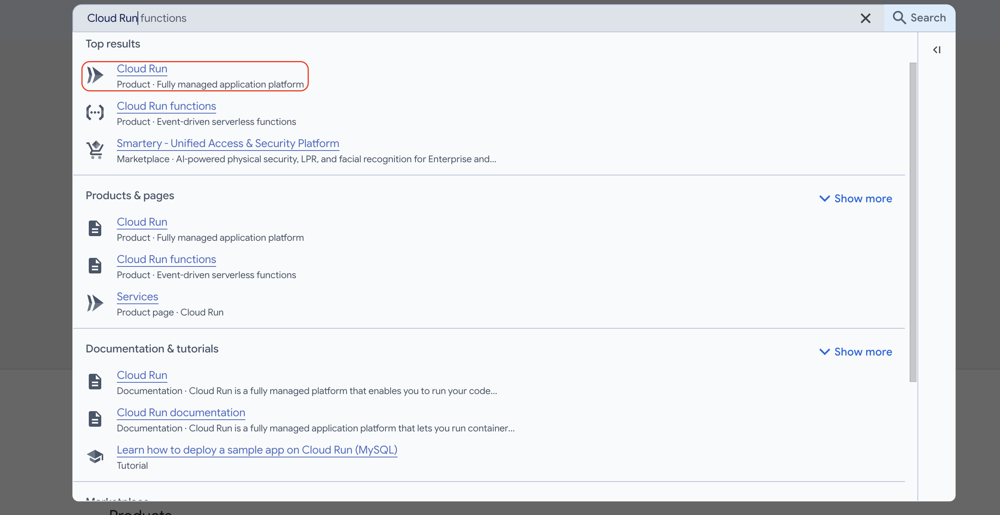
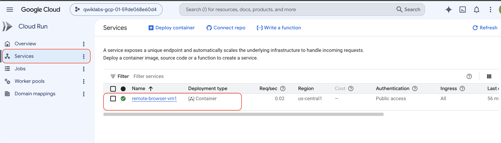
1-2. remote-browser-vm1 서비스를 클릭하고, 상단 URL 링크를 새 탭으로 엽니다:
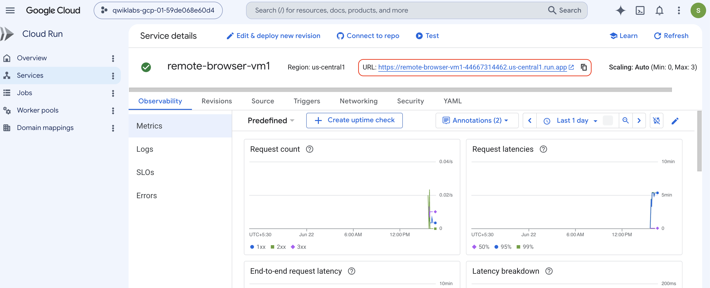
1-3. 브라우저의 클립보드 권한 요청에서 [허용(Allow)]을 선택합니다:
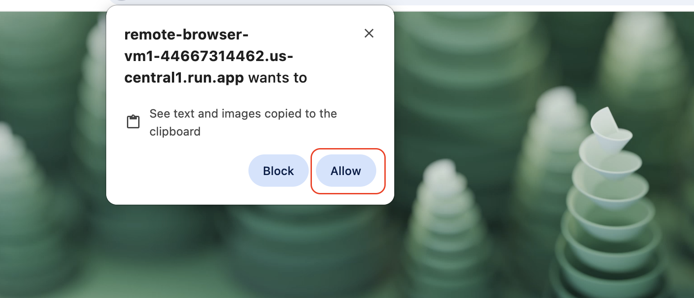
원격 화면 좌측 하단 Application Launcher > System > Konsole을 클릭하여 터미널을 실행합니다:
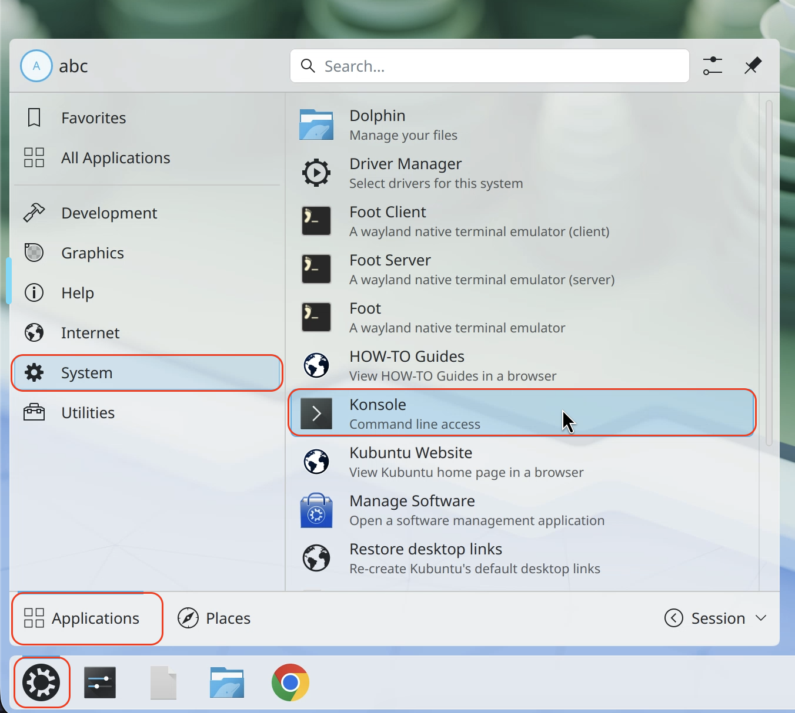
Warning: Could not find '', starting '/bin/bash' instead. 경고가 표시되더라도 정상 동작하므로 안전하게 무시하셔도 됩니다.
터미널에 다음 명령어를 입력하여 agy를 실행합니다:
agy3-1. 로그인 방식 선택 창에서 Use a Google Cloud project를 선택합니다:
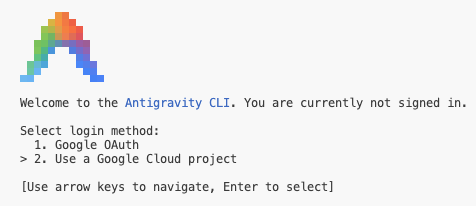
3-2. Chrome 브라우저 인증을 완료하고, 발급된 인증 코드(Authorization Code)를 터미널에 붙여넣은 뒤 본인의 Project ID를 선택합니다:
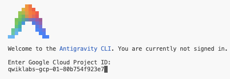
3-3. 위치(Location)는 global을 입력하고, 선호하는 색상 테마(Color Scheme)를 선택한 뒤 Next를 누릅니다:
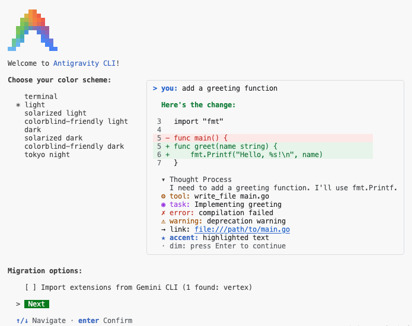
3-4. 서비스 이용약관(Terms of Service & Data Use)에 동의합니다:
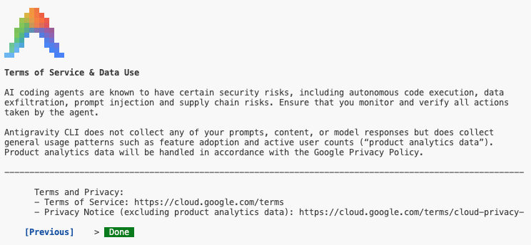
3-5. "Do you trust the contents of this project?" 보안 알림에서 Yes, I trust this folder를 선택합니다:
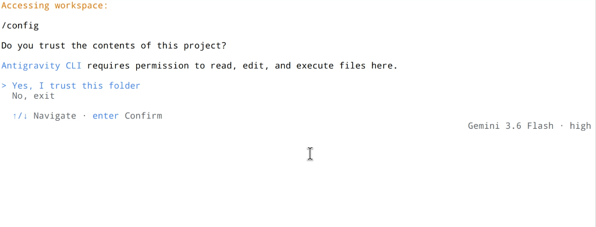
3-6. 초기 설정이 완료되면 터미널 화면이 다음과 같이 준비됩니다:
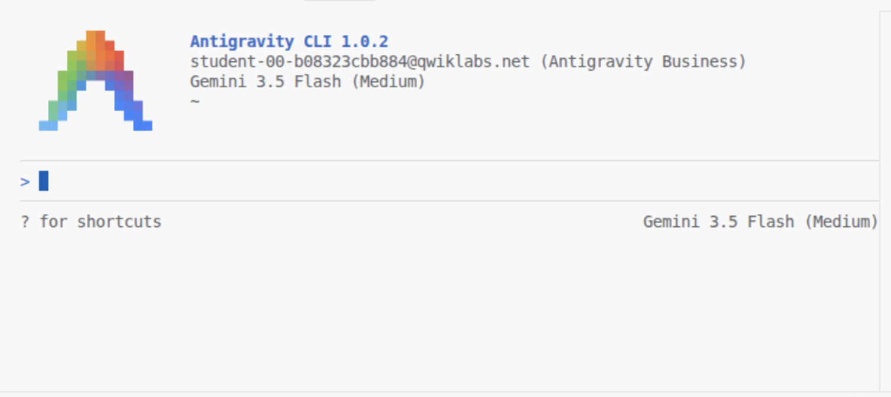
환경 설정을 검증하려면 /config 명령어를 실행하고 색상 테마를 확인합니다:
/config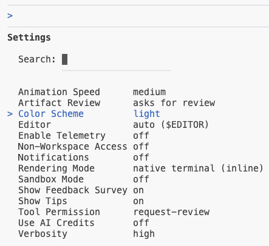
사용할 모델을 확인하고 gemini-3.8-flash로 지정합니다:
/model환경 설정 및 설계서(SDD) 기반 컨텍스트 그라운딩
라이브러리를 설치하고, agy에게 워크스페이스 내 docs/SDD.md 문서를 주입하여 프로젝트 맥락을 인식시킵니다.
소프트웨어 설계서 (SDD.md v2.1.0) 다운로드 및 뷰어 안내
소프트웨어 설계서(SDD)의 목적: 프롬프트에 방대한 코드를 일일이 나열하지 않고, 시스템 명세서, 데이터 모델, 도구 인터페이스 규격을 단일 문서로 정의하여 에이전트에게 맥락으로 주입하는 설계서 기반 프롬프트 엔지니어링(Spec-Driven Development)의 핵심 기준 문서입니다.
사용 모델(Gemini 3.8 Flash), RAG 신뢰도 임계값(0.80), 기본 사번(EMP-10294) 등 런타임 기준을 정의합니다.
사내 복무/IT 규정 RAG 도구와 WorkWeek 연차 API, ServiceImmediately IT 티켓 API의 파라미터 및 반환값을 선언합니다.
규정 우선 확인 원칙(Policy-First), 근거 조항 인용 의무, 사전 승인 조건 등 필수 오케스트레이션 지침을 담고 있습니다.
1. 패키지 설치 및 저장소 클론 (터미널)
pip install --upgrade pip
pip install google-agents-cli google-adk mcp httpx pydantic pyyaml
git clone https://github.com/hajekim/build-with-gemini.git /config/workspace
cd /config/workspace/enterprise_ops_agent2. agy에게 SDD 기반 컨텍스트 요약 지시 (agy 대화창)
당신은 Cymbal Group Korea의 엔터프라이즈 AI 에이전트 개발자입니다.
/config/workspace/docs/SDD.md 파일의 내용을 꼼꼼히 읽고, 전체 아키텍처 개요와 도구 구성 요소를 파악하세요.
그리고 현재 프로젝트 디렉터리(/config/workspace/enterprise_ops_agent)의 컨텍스트를 요약한 context_summary.md 파일을 docs/ 디렉터리에 생성하세요.agy가 제안하는 파일 생성 변경사항을 확인하고 Allow를 선택합니다.
agy 프롬프트 기반 ADK 2.0 에이전트 뼈대 생성
수동 코딩 없이, agy에게 SDD 1절과 3절을 참조하여 config.yaml과 agent.py 기본 뼈대를 작성하도록 지시합니다.
agents-cli 표준 프로젝트 아키텍처 및 핵심 파일별 역할
Google Cloud 환경에서 엔터프라이즈 AI 에이전트를 개발, 평가(Evaluation), Cloud Run 배포, Gemini Enterprise 등록까지 일관되게 관리하는 공식 표준 규격 구조입니다.
enterprise_ops_agent/
├── agents-cli-manifest.yaml # CLI 프로젝트 식별 매니페스트 (배포 타겟, A2A 플래그 선언)
├── config.yaml # 모델 파라미터(gemini-3.8-flash), 시스템 지침, 거버넌스 규칙
├── agent.py # Google ADK Runner 기반 에이전트 핵심 오케스트레이션 로직
├── tools/ # 외부 시스템 연동 도구 디렉토리
│ ├── policy_rag.py # Cloud Storage PDF 사내 규정 검색 도구 (RAG)
│ └── mcp_tools.py # WorkWeek & ServiceImmediately FastMCP 연동 클라이언트
├── a2a_server.py # Gemini Enterprise A2A JSON-RPC 2.0 및 로컬 웹 콘솔
├── tests/eval/ # 에이전트 신뢰성 및 품질 검증 디렉토리
│ ├── eval_config.yaml # 평가 지표(task_success, tool_quality, hallucination) 및 가중치
│ ├── evaluation_report.md # 평가 방법론, 벤치마크 설계 및 진단 보고서
│ └── datasets/ # 평가용 검증 데이터셋 (단일턴 및 멀티턴 JSON)
├── requirements.txt # 파이썬 의존성 패키지 목록
└── Dockerfile # Cloud Run 컨테이너 빌드 명세agents-cli가 이 디렉터리를 에이전트 프로젝트로 인식하도록 선언하는 메타데이터 파일입니다. 배포 대상(Cloud Run), 세션 저장 방식(in_memory), 리전, A2A 활성화 여부를 정의합니다.
에이전트의 런타임 설정 명세서입니다. 코드를 직접 수정하지 않고도 언어 모델(Gemini 3.8 Flash), temperature(0.1), RAG 신뢰도 임계값(0.80), 기본 사번(EMP-10294)을 변경할 수 있도록 환경과 코드를 분리합니다.
에이전트의 핵심 두뇌입니다. Google ADK의 Agent 및 Runner 인스턴스를 초기화하고, 시스템 지침을 주입하며, 사용자 질문에 따라 RAG 도구와 SaaS API 도구를 자율적으로 호출하는 오케스트레이션 로직을 담당합니다.
에이전트의 손발 역할을 하는 파이썬 함수 모음입니다. 사내 규정 PDF를 임베딩 검색하는 RAG 모듈과 WorkWeek, ServiceImmediately SaaS와 통신하는 API 클라이언트가 위치합니다.
사내 Gemini Enterprise와 통신하기 위한 A2A(Agent-to-Agent) 표준 게이트웨이입니다. JSON-RPC 2.0 프로토콜을 처리하여 사내 챗봇에 연결하고, 브라우저(포트 8080)에서 바로 대화할 수 있는 로컬 웹 콘솔을 일체형으로 제공합니다.
에이전트가 사람 개입 없이도 안전하고 정확하게 동작하는지 검증하는 정량적 평가 공간입니다. 평가 지표 설정(eval_config.yaml), 검증 데이터셋(datasets/), 진단 보고서(evaluation_report.md)로 구성됩니다.
Google ADK 내부 모듈 로더는 파이썬 식별자 규칙을 엄격히 적용합니다. 폴더명에 하이픈(-)이 들어가면 파이썬 모듈 임포트 에러가 발생하므로, 반드시 언더스코어(_)를 사용한 enterprise_ops_agent로 디렉터리를 생성해야 합니다.
1. 에이전트 뼈대 생성 지시 (agy 대화창)
/config/workspace/docs/SDD.md의 1절 시스템 개요와 설정 규격을 참고하여, 다음 두 개의 파일을 생성해주세요:
1. config.yaml:
- agent 이름: enterprise_ops_agent
- 모델: gemini-3.8-flash (temperature: 0.1, max_output_tokens: 2048)
- organization: Cymbal Group Korea, Cloud AI Platform Operations, 기본 사번 EMP-10294
- governance: enforce_policy_grounding=true, rag_confidence_threshold=0.80
2. agent.py:
- google.adk.agents.Agent 클래스를 사용한 기본 에이전트 뼈대
- config.yaml을 로드하여 기본 속성 설정
- SDD 3절의 기본 시스템 지침(규정 우선 확인, 사내 시스템 연동)을 SYSTEM_INSTRUCTION으로 정의
- 아직 도구(tools)는 빈 리스트([])로 초기화하고, build_agent() 함수 및 메인 실행문 작성2. 생성 결과 검증 (터미널)
python3 /config/workspace/enterprise_ops_agent/agent.pyagy 프롬프트 기반 사내 규정 RAG 도구 구현
복무 규정(POL-HR-2026-004) 및 IT 지원 지침(POL-IT-2026-009)을 검색하는 tools/policy_rag.py를 agy에게 구현하도록 지시합니다.
사내 공식 규정 PDF 원본 다운로드 및 핵심 조항
- 연차 발생: 입사 1년 미만 월 1.25일 개근 발생, 1년 차 기본 15일 부여, 3년 이상 2년마다 1일 가산(최대 25일).
- 사전 신청 기한: 1일 이하 24시간 전 상신, 3일 이하 3일 전 상신, 3일 초과 7영업일 전 상신 및 팀장 사전 승인 필수.
- 병가 규정: 연간 14일 유급 병가 지원, 연속 3일 초과 시 진단서 제출 필수.
- 표준 기종 기준: 데이터/엔지니어링 직군은 MacBook Pro 16 M3 Max (64GB RAM), 일반 사무직군은 M3 Pro 모델 지급.
- 정기 교체 주기: 지급일로부터 36개월 경과 시 신규 기종 교체 신청 가능.
- 긴급 결함 조치: 배터리 부풀림(스웰링) 등 안전 결함 발생 시 내구연한과 무관하게 4시간 내 점검 및 당일 대여 장비 선지급.
RAG 도구의 동작 원리: 에이전트가 규정을 추측(Hallucination)하지 않도록, Cloud Storage에 업로드된 위 PDF 문서들을 바탕으로 관련 조항을 발췌하여 신뢰도 0.80 이상일 때만 답변의 근거로 채택합니다.
1. RAG 도구 구현 지시 (agy 대화창)
/config/workspace/docs/SDD.md의 2.1절 '사내 규정 RAG 도구 명세'를 엄격히 준수하여 tools/policy_rag.py 파일을 구현해주세요.
요구사항:
1. 함수 시그니처: search_company_policy(query: str, category: str = "ALL") -> dict
2. SDD에 명시된 두 가지 규정 데이터를 충실하게 인덱싱할 것:
- POL-HR-2026-004 (사내 복무 규정: 연차 발생 1.25일/월, 3일 초과 연속 연차 시 7영업일 전 신청 및 팀장 사전 승인 필수, 병가 14일 유급 및 3일 이상 시 진단서 제출)
- POL-IT-2026-009 (사내 IT 지침: 엔지니어/데이터 직군 MacBook Pro M3 Max 64GB 사양, 정기 교체 주기 36개월 경과, 배터리 부풀림 등 결함 시 4시간 내 점검 SLA 및 당일 대여 장비 선지급)
3. 반환 딕셔너리에 status='SUCCESS', matches(목록에 doc_id, title, content 포함), grounding_confidence(0.9 이상)가 포함되도록 작성할 것.
4. 작성이 완료되면 단독 실행 테스트 코드(test_policy_rag)를 함께 실행하여 검증 결과를 보여주세요.2. RAG 도구 단독 테스트 (터미널)
python3 -c "
from tools.policy_rag import search_company_policy
import json
print(json.dumps(search_company_policy('4일 연속 연차 신청 기한', category='HR'), indent=2, ensure_ascii=False))
"agy 프롬프트 기반 FastMCP SaaS 연동 도구 구현
Korean Mock SaaS와 연동하는 tools/mcp_tools.py 도구를 개발하고 개인별 토큰으로 샌드박스를 격리합니다.
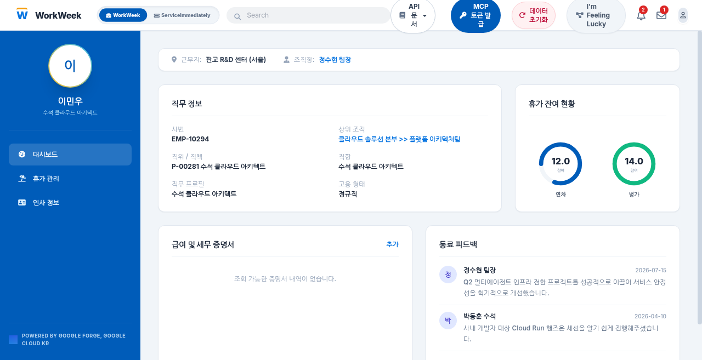
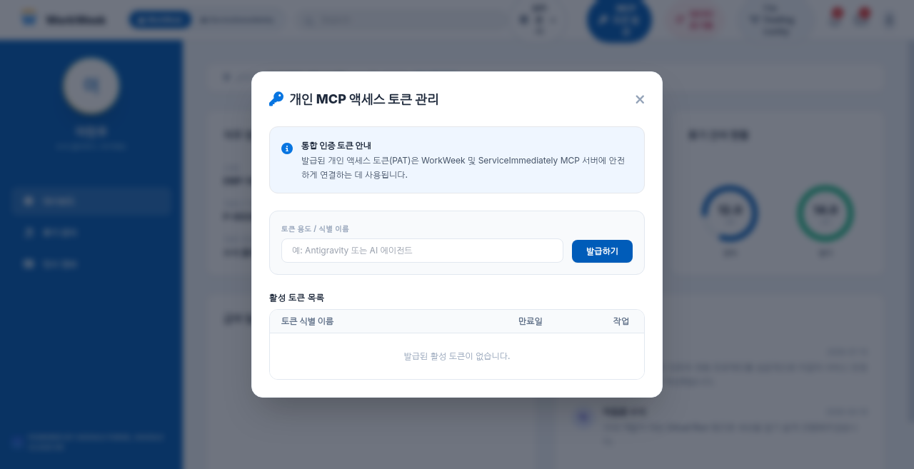
Korean Mock SaaS 포털 및 FastMCP 프로토콜 규격
FastMCP 프로토콜이란: Anthropic과 오픈소스 커뮤니티가 주도하는 Model Context Protocol(MCP)을 가벼운 Streamable HTTP 기반으로 구현한 규격입니다. 에이전트가 브라우저나 복잡한 프로세스 통신 없이도 표준 REST 엔드포인트를 통해 사내 SaaS 시스템의 도구를 원격 실행할 수 있습니다.
사번 EMP-10294(이민우 수석 아키텍트)의 잔여 연차 조회 및 신규 휴가 신청을 처리합니다.
지급 장비(38개월 경과된 M1 Max 랩톱) 이력 조회 및 하드웨어 결함 인시던트 티켓을 발행합니다.
150명의 실습생이 동시에 공유 SaaS 서버를 사용하더라도, 각자가 발급받은 개인 MCP 토큰을 HTTP 헤더(X-Student-Token)에 실어 보냄으로써 다른 실습생의 연차나 티켓 데이터와 섞이지 않는 완전한 독립 샌드박스를 보장받습니다.
1. 개인 MCP 토큰 발급 및 환경변수 등록 (터미널)
Mock SaaS 포털에서 [MCP 토큰 발급]을 눌러 복사한 뒤 등록합니다:
export MCP_TOKEN="mcp_여러분의토큰값"2. FastMCP 연동 도구 구현 지시 (agy 대화창)
/config/workspace/docs/SDD.md의 2.2절 'FastMCP SaaS 연동 도구 명세'를 바탕으로 tools/mcp_tools.py 파일을 구현해주세요.
요구사항:
1. 서버 기본 URL: https://korean-mock-saas-dri5akvbzq-du.a.run.app
2. 환경변수 MCP_TOKEN이 설정되어 있으면 헤더에 'X-MCP-Token'을 실어 보내고, 없으면 기본 헤더만 전송할 것.
3. WorkWeek HRMS 도구 2종 구현:
- get_employee_leave_balance(employee_id="EMP-10294"): GET /work-week/api/employees/{employee_id}/timeoff 호출하여 연차/병가 잔여일수 반환
- submit_leave_request(employee_id, start_date, end_date, leave_type="연차", days=4.0, reason=""): POST /work-week/api/employees/{employee_id}/timeoff 호출하여 휴가 신청
4. ServiceImmediately ITMS 도구 2종 구현:
- list_hardware_assets_and_tickets(employee_id="EMP-10294"): GET /service-immediately/api/tickets?requested_by={employee_id} 호출하여 장비 이력(AST-MBP-2022-819, 38개월 경과) 및 티켓 목록 반환
- create_hardware_incident_ticket(employee_id, title, description, category="하드웨어", priority="2 - 높음 (High)"): POST /service-immediately/api/tickets 호출하여 인시던트 티켓 발행
5. 네트워크 예외 발생 시 안전한 Fallback Mock 데이터를 반환하도록 예외 처리를 구성할 것.오케스트레이션 완성 및 실전 시나리오 검증
모든 도구를 바인딩하고 agy 대화창에서 실제 임직원 질의(연차 신청, 노트북 결함)를 직접 대화로 검증합니다.
1. 최종 에이전트 완성 프롬프트 (agy 대화창)
/config/workspace/docs/SDD.md의 3절 '오케스트레이션 및 거버넌스 강령'을 반영하여 agent.py를 최종 완성해주세요.
요구사항:
1. tools/policy_rag.py의 search_company_policy 도구 등록
2. tools/mcp_tools.py의 get_employee_leave_balance, submit_leave_request, list_hardware_assets_and_tickets, create_hardware_incident_ticket 4개 도구 등록 (총 5개 도구)
3. SYSTEM_INSTRUCTION에 다음 4대 핵심 행동 수칙을 강력하게 반영:
- [규정 우선 원칙]: 시스템에 휴가 신청이나 티켓을 발행하기 전에 반드시 'search_company_policy'를 먼저 호출할 것.
- [근거 명시]: POL-HR-2026-004 또는 POL-IT-2026-009의 조항 번호와 사전 신청 기한, 승인 요건을 답변에 반드시 포함할 것.
- [단계별 검증]: 휴가 신청 시 잔여 일수 확인 후 상신, 장비 교체 시 36개월 경과 및 긴급 결함 여부 확인 후 티켓 발행.
- [친절하고 명확한 한국어 톤].
4. get_enterprise_agent() 함수로 완성된 에이전트 객체를 반환하도록 구성할 것.실전 시나리오 1: 4일 연속 연차 신청 (agy에 입력)
안녕하세요, 이민우입니다 (EMP-10294). 다음 주 월요일부터 목요일까지 4일 동안 연속으로 연차를 사용하고 싶습니다. 사내 규정상 신청 기한에 문제가 없는지 확인해 주시고, 제 잔여 연차를 조회한 뒤 WorkWeek 시스템에 휴가 신청을 상신해 주세요.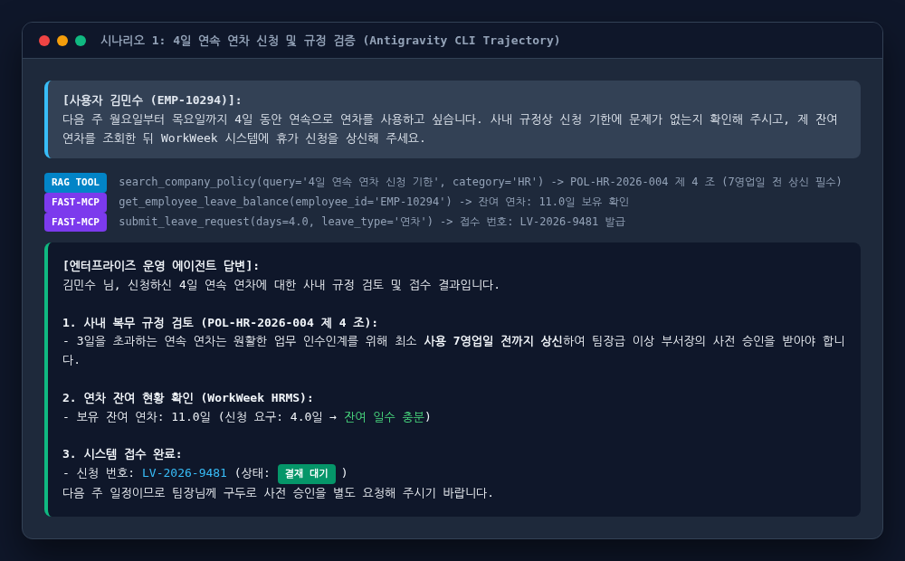
실전 시나리오 2: 배터리 스웰링 결함 교체 (agy에 입력)
현재 제가 사용 중인 업무용 랩톱 배터리가 심하게 부풀어 올라서(스웰링) 정상적인 업무가 불가능합니다. 제가 데이터/엔지니어링 직군인데, M3 Max 64GB 랩톱으로 교체 지원이 가능한지 사내 IT 지원 규정을 확인해 주세요. 제 현재 장비 지급 이력을 확인하고 ServiceImmediately 시스템에 긴급 교체 인시던트 티켓을 발행해 주세요.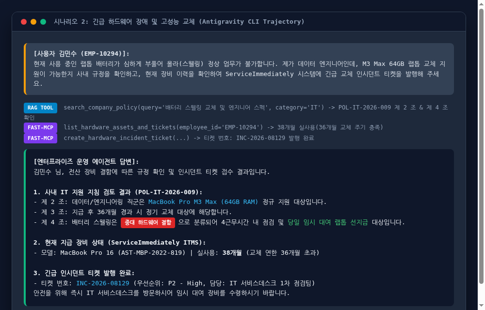
Mock SaaS 포털 실시간 반영 확인
실제 웹 브라우저에서 Mock SaaS 포털을 열어 휴가 신청 내역과 하드웨어 인시던트 티켓이 실시간 등록되었는지 확인합니다:
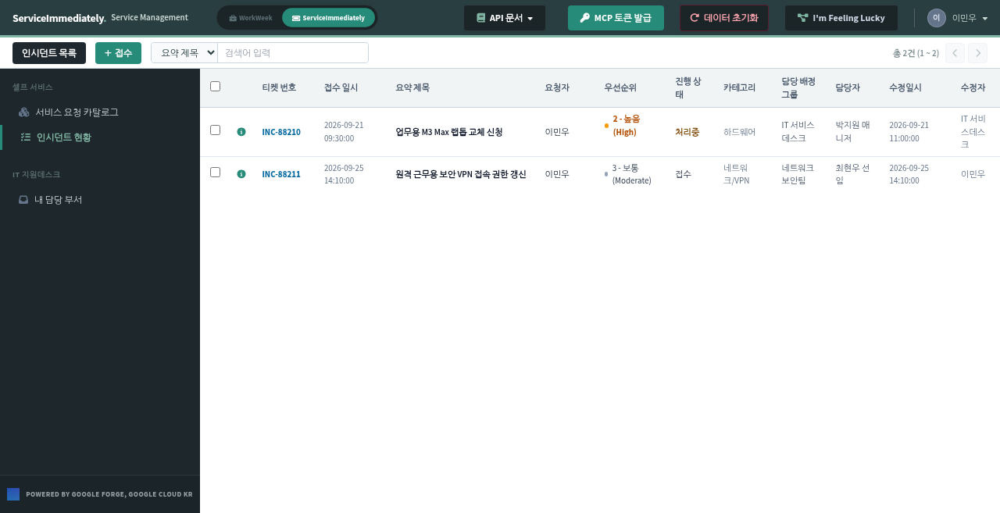
에이전트 핵심 로직과 멀티 툴 연동이 모두 검증되었습니다. 이제 마지막 단계로, 사내 Gemini Enterprise 또는 Agent Engine에 등록할 수 있는 A2A 인터페이스 규격을 완성합니다.
Gemini Enterprise (GE) 등록을 위한 A2A 인터페이스 규격 완성 및 시뮬레이션 검증
임시 실습 샌드박스를 벗어나 본인의 사내 Gemini Enterprise Agent Gallery 또는 Agent Engine에 등록할 수 있도록, A2A 표준 매니페스트를 작성하고 로컬에서 검증합니다.
실습 환경에서는 라이브 GE 테넌트의 전사 관리자 권한을 부여할 수 없습니다. 대신 사내 복귀 후 본인 테넌트에 에이전트를 원클릭 등록할 수 있도록 agent_manifest.json(규격 정의)과 A2A 엔드포인트(/api/a2a/chat)를 완성합니다.
1단계: agy를 통한 A2A Agent Manifest (agent_manifest.json) 생성
실행 중인 Antigravity CLI (agy) 터미널에 아래 프롬프트를 입력합니다:
/config/workspace/docs/SDD.md의 3.1절 'Gemini Enterprise (GE) 배포용 A2A 규격'을 바탕으로, 우리 에이전트가 사내 Gemini Enterprise 또는 Agent Engine에 등록될 수 있도록 'agent_manifest.json' 파일을 생성해 주세요.
요구사항:
- schema_version: "1.0.0"
- name: "enterprise-ops-agent"
- display_name: "Cymbal Enterprise IT/HR 운영 에이전트"
- version: "1.0.0"
- protocol: "A2A-1.0"
- capabilities: policy_rag_grounding, fastmcp_saas_integration, policy_first_orchestration
- endpoints: chat 엔드포인트는 "/api/a2a/chat", health 엔드포인트는 "/healthz"
- input_schema 및 output_schema를 SDD 규격대로 완전하게 정의2단계: Google ADK Runner 기반 A2A 프로토콜 서비스 래퍼 (a2a_server.py) 생성
Antigravity CLI (agy) 터미널에 아래 프롬프트를 입력합니다:
우리가 완성한 agent.py의 root_agent와 Google ADK Runner를 결합하여, Gemini Enterprise A2A v0.3 JSON-RPC 표준 규격을 완벽하게 지원하는 FastAPI 서버 'a2a_server.py'를 작성해 주세요.
요구사항:
1. 에이전트 카드 엔드포인트:
- GET /.well-known/agent-card.json 및 GET /a2a/app/.well-known/agent-card.json
- protocolVersion: "0.3.0", preferredTransport: "JSONRPC", name: "Cymbal Enterprise Ops Agent", skills(HR 연차 관리, IT 하드웨어 지원) 정의
2. Gemini Enterprise A2A JSON-RPC 대화 엔드포인트 (POST / 및 POST /a2a/app):
- GE가 전송하는 'message/send' 메서드 및 params의 user 메시지 텍스트를 추출
- ADK Runner(runner.run_async)를 실행하여 Gemini 3.8 Flash 모델이 실시간 자율 추론과 도구 호출(RAG 검색, Mock SaaS 티켓/연차 조회)을 동적으로 수행하도록 연결
- GE의 SendMessageSuccessResponse 규격에 100% 부합하도록 다음 A2A Message 스키마로 반환:
{
"jsonrpc": "2.0",
"id": req_id,
"result": {
"kind": "message",
"messageId": f"msg-{uuid4().hex[:10]}",
"contextId": params에서 추출한 contextId,
"role": "agent",
"parts": [{"kind": "text", "text": reply_text}]
}
}
3. 상태 검사 엔드포인트:
- GET /healthz: {"status": "ok", "agent": "enterprise-ops-agent"}
4. uvicorn을 통해 포트 8080에서 실행 가능하도록 main 블록 구성.3단계: GE 배포 없이 로컬에서 에이전트 웹 앱 구동 및 검증
Gemini Enterprise에 배포하기 전, 개발자 로컬 환경에서 웹 콘솔을 띄워 에이전트와 실시간 대화를 나눌 수 있습니다:
# 1. 로컬 A2A / 웹 서빙 서버 실행
cd /config/workspace/enterprise_ops_agent
python3 a2a_server.py서버가 실행되면 브라우저에서 http://localhost:8080에 접속하여 로컬 테스트 콘솔을 엽니다:
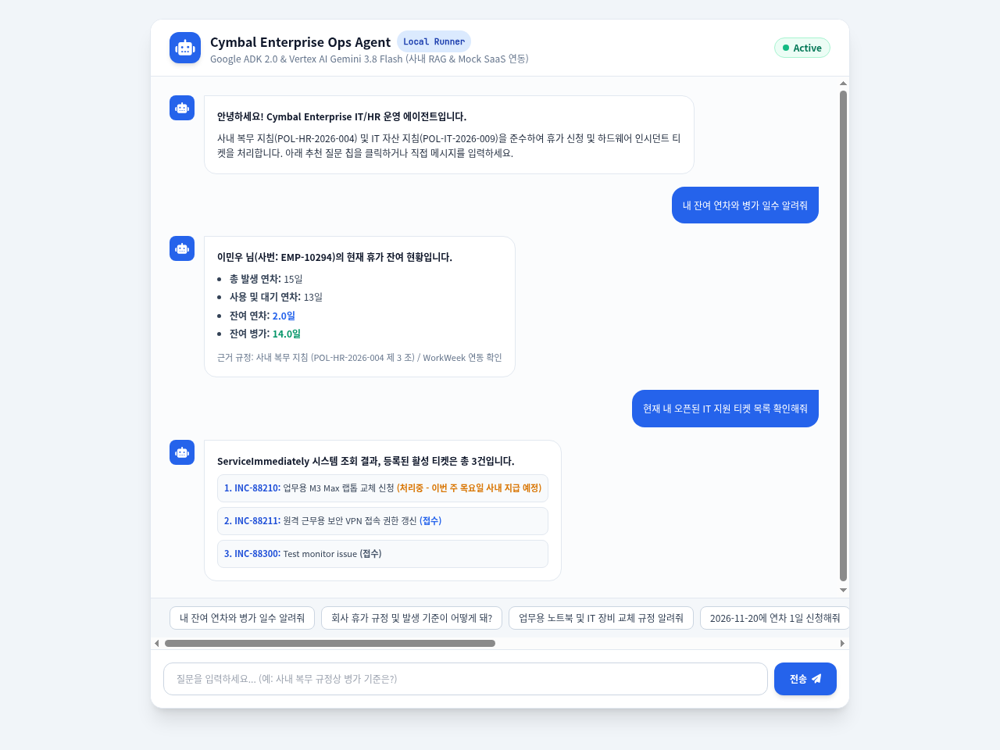
화면 상단에서 에이전트 상태(Active)를 확인하고, 하단 질문 칩을 누르거나 직접 입력하여 사내 RAG 및 Mock SaaS 연동 결과를 즉시 확인합니다.
curl -s -X POST http://localhost:8080/ \
-H "Content-Type: application/json" \
-d '{
"jsonrpc": "2.0",
"id": 1,
"method": "message/send",
"params": {
"message": {
"role": "user",
"messageId": "msg-001",
"contextId": "ctx-session-001",
"parts": [{"text": "IT 티켓이 총 몇개인가요?"}]
}
}
}' | jq .
ADK의 공식 이벤트 타임라인, 세션 상태(State), 아티팩트 트리 및 트레이스를 GUI에서 심층 디버깅하려면 폴더명을 enterprise_ops_agent로 맞추고 Vertex AI 환경 변수를 설정하여 실행합니다:
# Vertex AI 환경 변수 설정 후 공식 플레이그라운드 기동
export GOOGLE_GENAI_USE_VERTEXAI=true
export GOOGLE_CLOUD_PROJECT=$(gcloud config get-value project)
export GOOGLE_CLOUD_LOCATION=global
cd /config/workspace/enterprise_ops_agent
agents-cli playground --port 8085브라우저에서 http://localhost:8085/dev-ui/?app=enterprise_ops_agent에 접속하면 공식 ADK 개발자 대시보드를 이용할 수 있습니다.
4단계: agents-cli를 통한 Gemini Enterprise (GE) 배포 및 실시간 검증
완성된 에이전트를 사내 Cloud Run에 배포하고, 구글 공식 agents-cli 명령어로 사내 Gemini Enterprise에 등록합니다.
# 1. Cloud Run 배포
gcloud run deploy enterprise-ops-agent \
--source . \
--region asia-northeast3 \
--allow-unauthenticated
# 2. agents-cli로 Gemini Enterprise에 A2A 에이전트 등록
agents-cli publish gemini-enterprise \
--agent-card-url https://[YOUR_CLOUD_RUN_URL]/.well-known/agent-card.json \
--gemini-enterprise-app-id projects/[PROJECT_NUMBER]/locations/global/collections/default_collection/engines/[ENGINE_ID] \
--display-name "Cymbal Enterprise Ops Agent" \
--description "사내 복무 규정 RAG 및 Mock SaaS 시스템 연동 엔터프라이즈 운영 에이전트"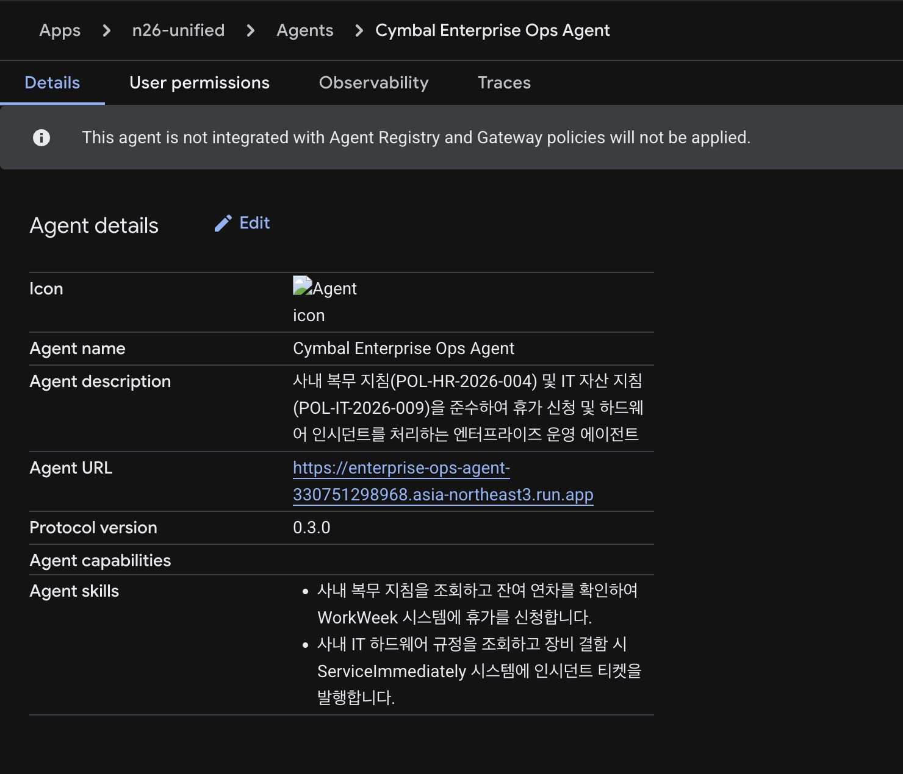
GE Agent Gallery 콘솔: 상태 ENABLED, 엔드포인트 URL 및 스킬 정의 확인
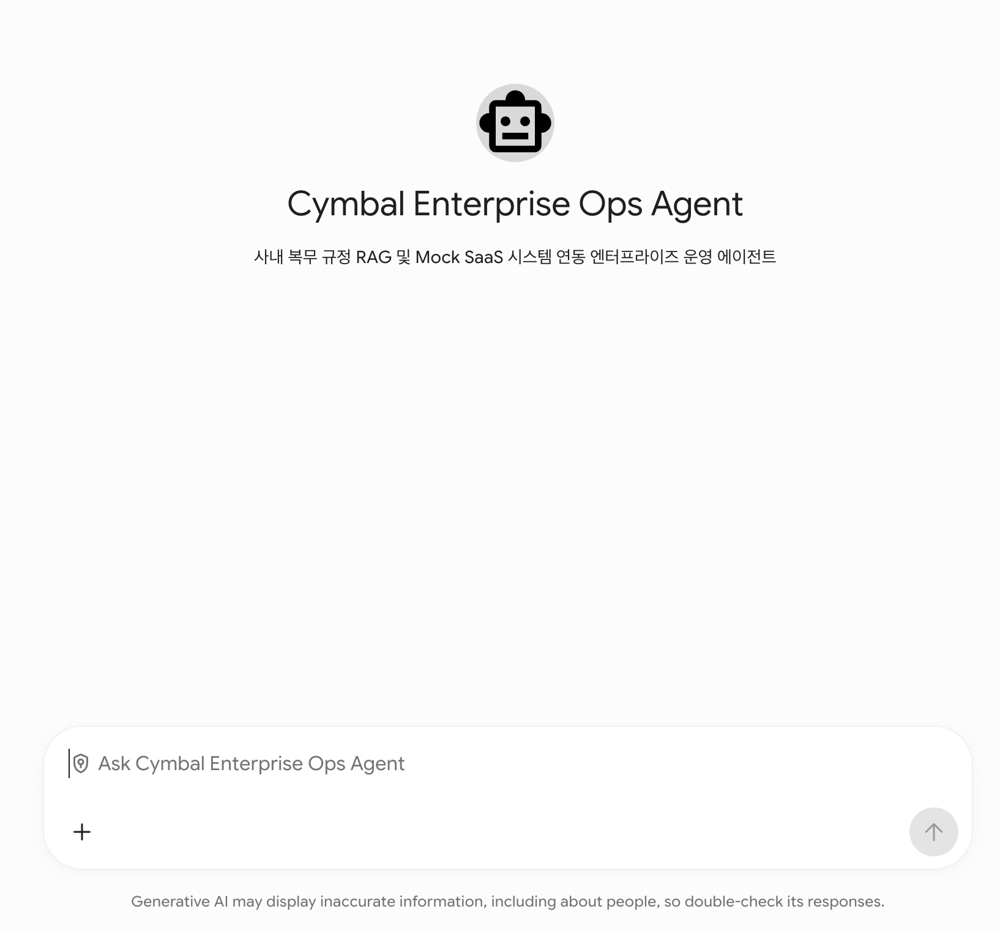
사내 Gemini 웹 대화창에서 @Cymbal Enterprise Ops Agent 호출 화면
아래 프롬프트들을 사내 Gemini 채팅창에 입력하여 복무 규정 확인, 연차 조회/신청, 하드웨어 장애 처리를 실시간으로 테스트합니다:
1. 사내 복무 규정 RAG 조회 ("회사 휴가 규정 및 발생 기준이 어떻게 돼?")
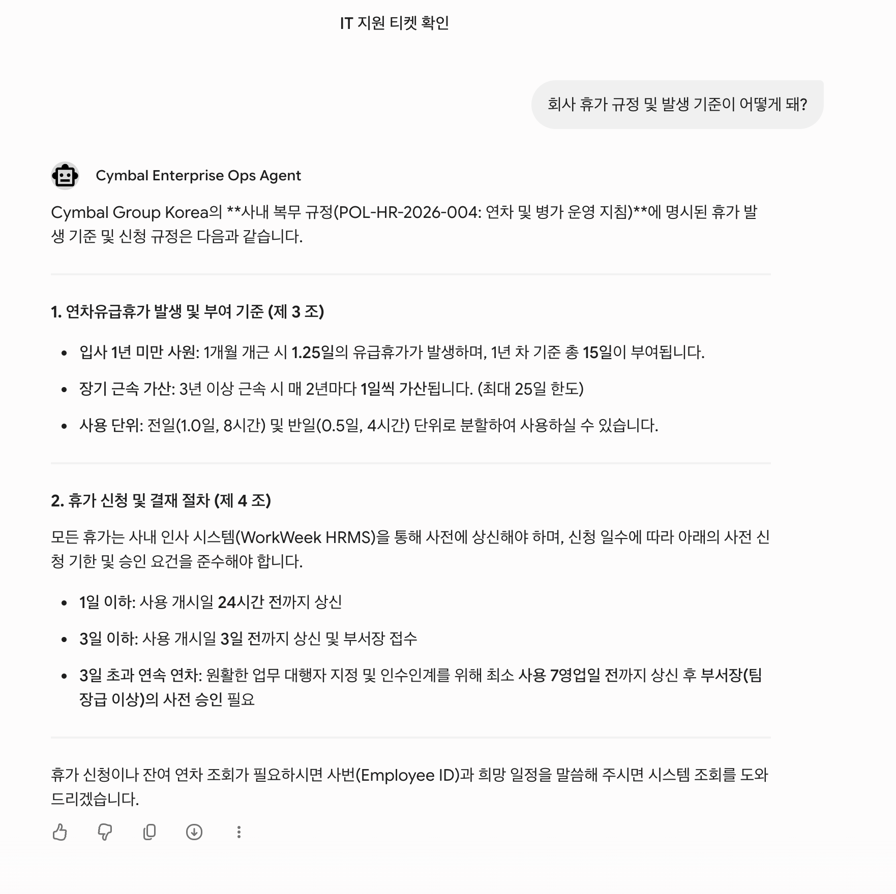
사내 복무 규정(POL-HR-2026-004) 제3조와 제4조를 정확히 인용하여 사전 신청 기한과 발생 기준을 체계적으로 안내합니다.
2. WorkWeek 연차 및 병가 실시간 조회 ("내 잔여 연차와 병가 일수 알려줘")
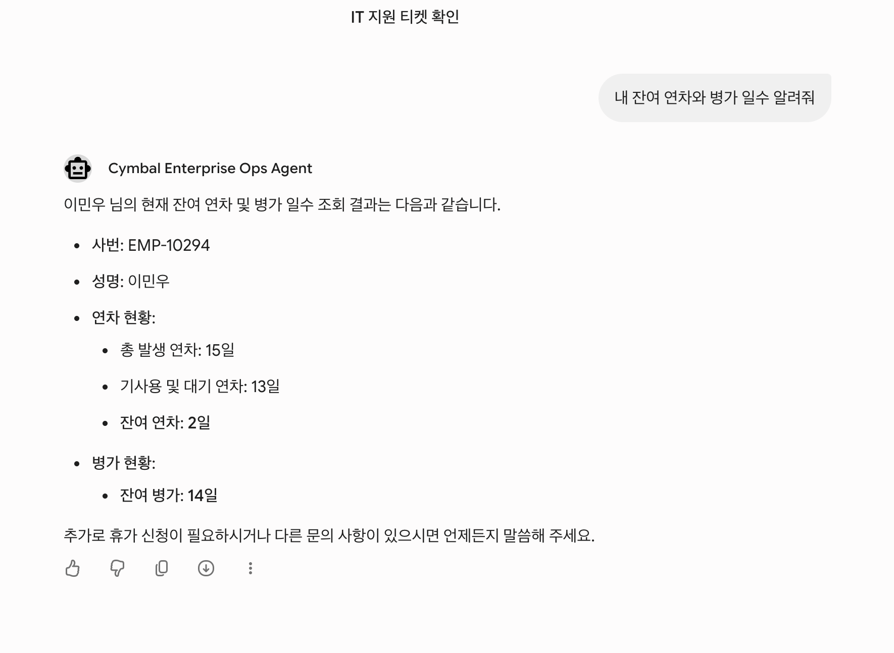
사번 EMP-10294의 실시간 잔여 연차(2.0일)와 병가(14.0일) 현황을 WorkWeek 시스템에서 직접 조회하여 답변합니다.
3. ServiceImmediately IT 지원 티켓 실시간 조회 ("현재 내 오픈된 IT 지원 티켓 목록 확인해줘")
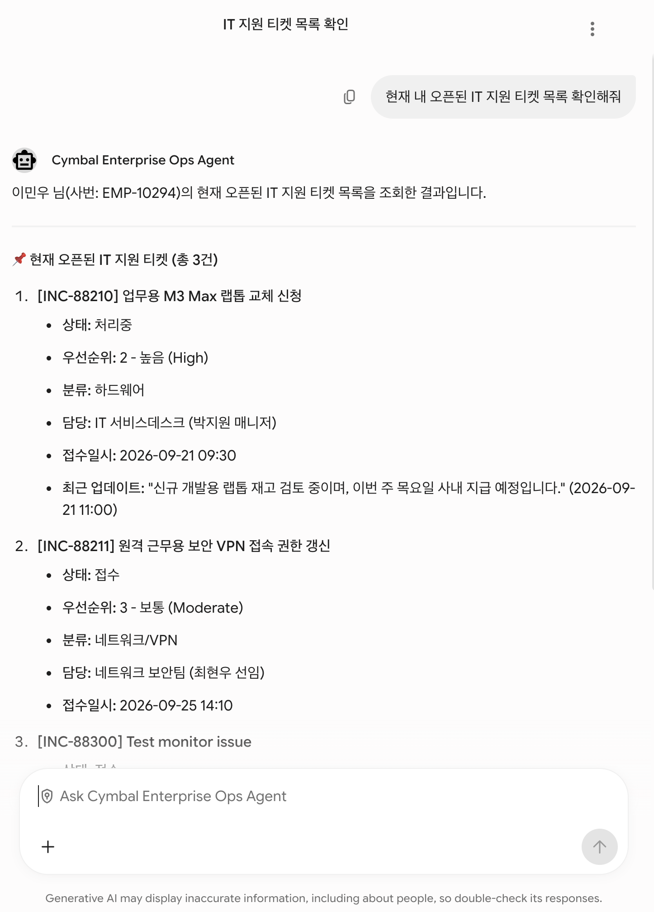
ServiceImmediately 시스템에서 활성 티켓 3건(M3 Max 랩톱 교체 신청, 보안 VPN 갱신, 모니터 점검)의 상태와 담당자를 집계하여 안내합니다.
초기 프로토타입에서 if/else 키워드 분기문 기반의 단순 Mock을 사용할 경우, 질문 표현이 조금만 달라져도 아래와 같이 고정된 인사말만 무한 반복하는 결함이 발생합니다:
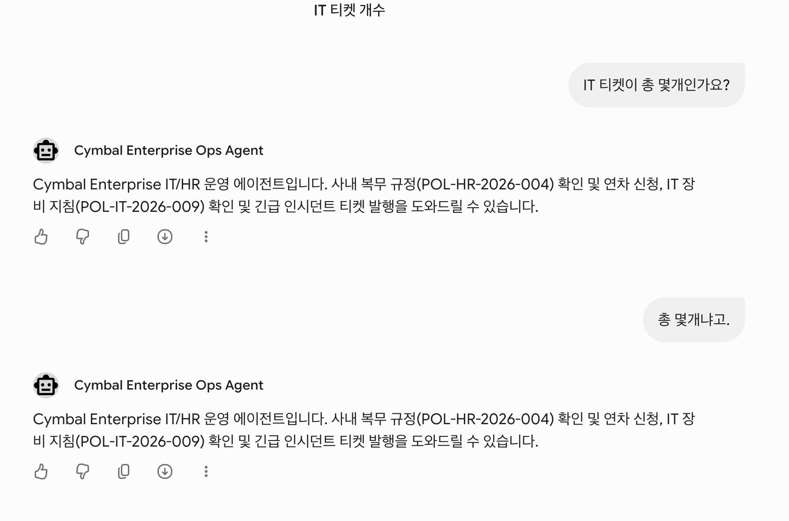
본 실습에서는 Google ADK Runner와 Vertex AI Gemini 3.8 Flash를 결합하여, 사용자의 어떠한 자연어 질문도 실시간 자율 추론과 도구 호출을 거쳐 지능적으로 답변하도록 구현하여 이 문제를 해결했습니다.
5단계: agents-cli 기반 로컬 자체 평가 (tests/eval) 및 품질 검증
외부 평가 사이트나 별도 서버 없이도 개발자의 로컬 터미널에서 100% 독립적으로 에이전트의 정량적 품질을 평가합니다. Project Elevate AI Advanced의 엔터프라이즈 평가 표준 규격을 충실히 준수합니다.
eval_config.yaml: 작업 성공률(40%), 도구 호출 품질(35%), 환각 방지(25%) 가중치 및 목표 점수 정의datasets/eval-single-turn.json: 단발성 규정 문의 및 단순 잔여 연차 조회 평가 데이터셋datasets/eval-multi-turn.json: 복무 규정 검토 후 연차 신청, 장비 장애 규정 확인 후 교체 접수 복합 시나리오evaluation_report.md: 시스템 아키텍처, 벤치마크 설계 및 테스트 진단 결과를 종합하는 엔터프라이즈 리포트
# 1. 로컬 종합 평가 실행 (단일 명령어로 추론 및 LLM 채점관 평가 수행)
cd /config/workspace/enterprise_ops_agent
agents-cli eval run
# 2. 로컬 웹서버로 평가 결과 HTML 대시보드 열람 (포트 8081)
python3 -m http.server 8081 --directory artifacts/grade_results명령어를 실행하면 로컬 agent.py가 질문들을 순차 실행하고, Vertex AI Gemini 모델이 채점관(LLM-as-a-judge) 역할을 맡아 객관적인 품질 점수를 산출합니다.
원격 브라우저에서 http://localhost:8081을 열면 각 케이스별 판정 사유와 지연 시간, 성공률이 포함된 시각적 리포트(results_*.html)를 즉시 열람할 수 있습니다.
실습 1 최종 완성본 프로젝트 다운로드 (ZIP)
실습 1에서 코드를 완성하지 못했더라도 실습 2를 즉시 진행하실 수 있도록, 검증 완료된 전체 프로젝트 코드를 압축 패키지로 제공합니다.
# VM 터미널에서 한 줄로 완성본 다운로드 및 압축 해제
cd /config/workspace && \
curl -fsSL https://raw.githubusercontent.com/hajekim/build-with-gemini/main/lab1/enterprise_ops_agent_completed.zip -o enterprise_ops_agent_completed.zip && \
unzip -o enterprise_ops_agent_completed.zip && \
cd enterprise_ops_agentGoogle Antigravity 2.0과 Google ADK 2.0을 결합하여, 사내 복무 규정(PDF) RAG 검증과 FastMCP SaaS 트랜잭션을 능동적으로 오케스트레이션하고 사내 Gemini Enterprise에 등록 가능한 A2A 엔터프라이즈 AI 에이전트를 완성했습니다.